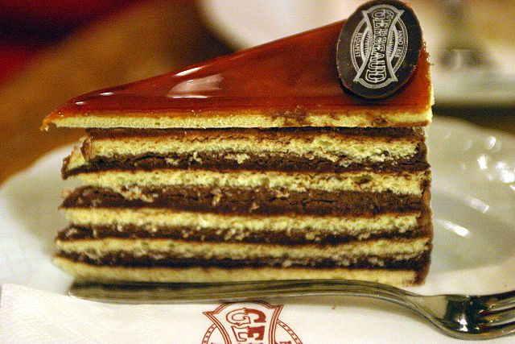
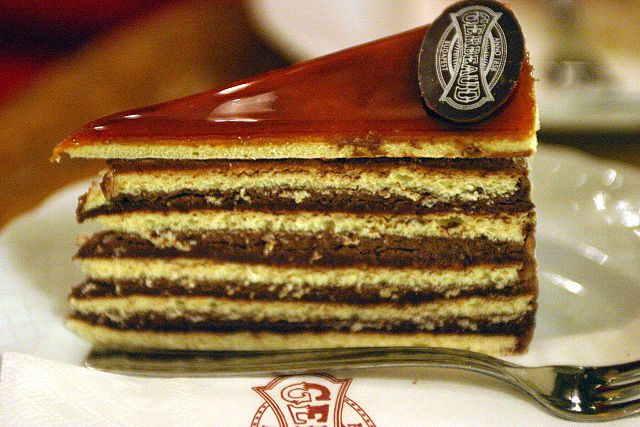
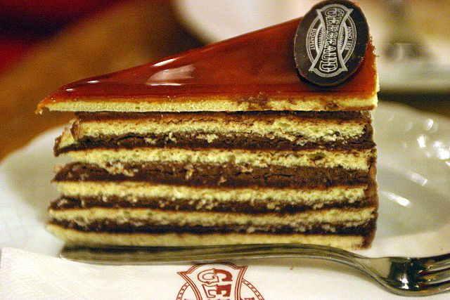

Sweetcom Bakery is an ultra-modern European style café specializing in German bread, French pastry and Italian Gelato ice cream and food at affordable prices. Karveli meaning loaf, offers freshly baked bread, cakes and pastries all with natural ingredients. All these products are of high quality. We also offer a wide range of continental and Italian dishes.


Biscuit, in the United States, a small quick bread usually made from flour, salt, and butter or vegetable shortening, with baking powder as a leavening agent. The dough is kneaded briefly and rolled out, and the biscuits are cut with a round cutter. The dough may also be dropped by spoonfuls for an irregular shape. Biscuits are usually eaten hot with butter and fruit preserves, sausage gravy, or ham. They are especially associated with the American South.
Any recipe for cake that begins "cream butter and sugar" is a butter cake. After the creaming, you add eggs to aerate the batter a bit, flour (and sometimes another liquid, like milk) to give it structure and texture, and baking powder or baking soda to ensure that it rises in the oven. Different types of cake batter within the butter cake family include chocolate, white, yellow and marble; for white and yellow cakes coloring typically depends on whether they have whole eggs, or extra egg yolks in them (yellow cake) or egg whites only (white cake).
In genoise, whole eggs are beaten with sugar until they're thick and ribbony, and then flour (and sometimes butter) is added and the batter is baked; the result is wonderful baked in a round cake pan and simply frosted, but genoise is also pliable enough to be baked in a jelly-roll pan and rolled up into a roulade. These layer cakes, common in the coffeehouses of Europe, are called "European-style" to distinguish them from American-style butter layer cakes, which generally have fewer, thicker layers.
Biscuit (always pronounced the French way as bees-kwee) cakes are another type of sponge cake containing both egg whites and yolks, but, unlike genoise, the whites and yolks are whipped separately and then folded back together. This creates a light batter that's drier than a genoise but holds its shape better after mixing. For this reason, it's often used for piped shapes such as ladyfingers. If baked in a tube pan like an angel food cake, it makes a very chewy sponge cake that was popular in the early 20th century but has since fallen out of favor. However, it's still known in a slightly different form as the classic Passover sponge cake, in which the flour is replaced by matzoh cake meal and potato starch.
These include baked cheesecakes and flourless chocolate cakes. For easy removal, they're often made in a springform pan, though some can also be made in regular round layer cake pans. Often the filled pan is placed in a larger pan that's half-filled with water to insulate the delicate, creamy cake from the oven's strong bottom heat, which might give the baked cake a porous rather than silky texture. This is called baking the cake in a water bath.
Coconut cake on platter PHOTO BY CHELSEA KYLE, PROP STYLING BY ASTRID CHASTKA, FOOD STYLING BY OLIVIA MACK ANDERSON Carrot cake uses the leavening practices of butter cake, but instead of butter uses a neutral oil like vegetable or canola oil. For this reason, it will keep a little longer than butter cakes but can sometimes come out on the greasy side. (The process is pretty much the same: instead of starting out beating butter and sugar, you start out whipping eggs and sugar, then add oil.)
Red velvet cake is essentially a butter cake, though it is frequently made with oil instead of butter. In addition, cocoa is added to the cake batter to create the distinct red velvet flavor — originally it was a reaction between buttermilk and the raw cocoa widely available at the time of red velvet's inception that caused a ruddy-hued crumb. Thesedays you'll more often find them tinted with food coloring.
sweetcom bakery products are just the best ,i tasted their milk bread and i really didnt want to stop eating keep it up

Just the best to taste i love it always
Tag a friend who deserves this #sweetcom cakes. #Tastethedifference üòã

OMG, they have the best doughnuts, and brownies I've ever had. The products are freshly made each morning, tasty and surprisingly great value when you consider they are small batch made. This is a must-go place if you love desserts. Customer service was great and...Moreüëç Date of visit: November 2019
OMG, they have the best doughnuts, and brownies I've ever had. The products are freshly made each morning, tasty and surprisingly great value when you consider they are small batch made. This is a must-go place if you love desserts. Customer service was great and...Moreüëç Date of visit: November 2019
OMG, they have the best doughnuts, and brownies I've ever had. The products are freshly made each morning, tasty and surprisingly great value when you consider they are small batch made. This is a must-go place if you love desserts. Customer service was great and...Moreüòçüòã Date of visit: November 2019
Their newest premier flavoured Doughie It was really nice!!! At first I thought, “nuts??” But the flavours were not overwhelming... It was just right...
And the nuts on top gave it a crunchy taste despite the dough being moist and yummy.. The garnishing...More
Date of visit: May 2018
Just the best to taste i love it always